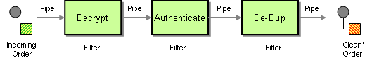
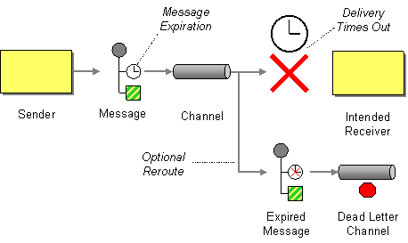
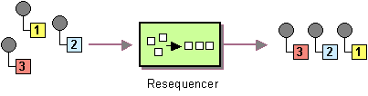
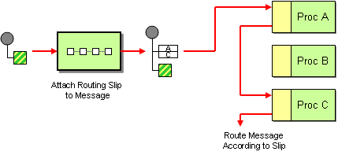
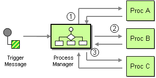
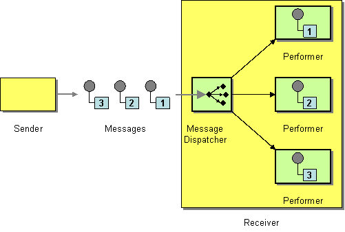

UML
A UML diagram is a graphical representation of part of a model, typically showing a number of elements connected by relationships. Diagrams are one of the most expressive and appealing views of the repository; the diagram has a name and type and is typically constructed for a particular audience to convey an idea or to create a narrative description of part of the model. Diagrams can also be used to generate useful system artifacts such as XML schemas, database schemas, programming code and more.
Structural Models
Class diagram
The Class diagram captures the logical structure of the system - the Classes - and things that make up the model. It is a static model, describing what exists and what attributes and behavior it has, rather than how something is done. On a Class diagram you can illustrate relationships between Classes and Interfaces using Generalizations, Aggregations and Associations, which are valuable in reflecting inheritance, composition or usage, and connections respectively.

Composite Structure
A Composite Structure diagram reflects the internal collaboration of Classes, Interfaces or Components (and their properties) to describe a functionality. Composite Structure diagrams are similar to Class diagrams, but whilst Class diagrams model a static view of Class structures, including their attributes and behaviors, Composite Structure diagrams model a specific usage of the structure. You can use them to express run-time architectures, usage patterns and the participating elements' relationships, which might not be reflected by static diagrams.

Component
A Component diagram has a higher level of abstraction than a Class diagram; usually a component is implemented by one or more Classes (or Objects) at runtime. They are building blocks, built up so that eventually a component can encompass a large portion of a system.

Deployment
A Deployment diagram shows how and where the system is to be deployed; that is, its execution architecture.

Behavioral
Use Case
Use Case diagrams capture Use Cases and the relationships between Actors and the subject (system).

StateMachines
StateMachines illustrate how an element (often a Class) can move between States, classifying its behavior according to transition triggers and constraining guards.
Sequence
A Sequence diagram is a structured representation of behavior as a series of sequential steps over time.

Communication
A Communication diagram is a diagram that shows the interactions between elements at run-time in much the same manner as a Sequence diagram. However, Communication diagrams are used to visualize inter-object relationships, while Sequence diagrams are more effective at visualizing processing over time.

Patterns
| Creational | Structural | Behavioral |
|---|---|---|
|
|
|
| Concurrency | Distributed |
|---|---|
|
|
Creational patterns
- Abstract factory
- Builder
- Dependency Injection
- Factory method
- Lazy initialization
- Multiton
- Object pool
- Prototype
- Singleton
Abstract factory
Provide an interface for creating families of related or dependent objects without specifying their concrete classes.

public abstract class AbstractJmsListenerContainerFactory<C extends AbstractMessageListenerContainer>
implements JmsListenerContainerFactory<C> {
// ...
protected abstract C createContainerInstance();
// ...
}
public class SimpleJmsListenerContainerFactory
extends AbstractJmsListenerContainerFactory<SimpleMessageListenerContainer> {
@Override
protected SimpleMessageListenerContainer createContainerInstance() {
return new SimpleMessageListenerContainer();
}
}Builder
Separate the construction of a complex object from its representation, allowing the same construction process to create various representations.

public static class NodeConfigBuilder {
// ...
public NodeConfigBuilder setSharedLibDirectory(String sharedLibDirectory) {
this.sharedLibDirectory = sharedLibDirectory;
return this;
}
// ...
public NodeConfigBuilder setShardHandlerFactoryConfig(PluginInfo shardHandlerFactoryConfig) {
this.shardHandlerFactoryConfig = shardHandlerFactoryConfig;
return this;
}
// ...
public NodeConfig build() {
// if some things weren't set then set them now. Simple primitives are set on the field declaration
if (loader == null) {
loader = new SolrResourceLoader(solrHome);
}
return new NodeConfig(nodeName, coreRootDirectory, solrDataHome, booleanQueryMaxClauseCount, ...);
}
Dependency Injection
Separate the construction of a complex object from its representation, allowing the same construction process to create various representations.

public class FooService {
private FooFormatter fooFormatter;
@Autowired
public FooService(FooFormatter fooFormatter) {
this.fooFormatter = fooFormatter;
}
}Factory method pattern
In class-based programming, the factory method pattern is a creational pattern that uses factory methods to deal with the problem of creating objects without having to specify the exact class of the object that will be created. This is done by creating objects by calling a factory method—either specified in an interface and implemented by child classes, or implemented in a base class and optionally overridden by derived classes—rather than by calling a constructor.

@Component
public class InstanceFooFactory {
@Bean
public Foo createInstance() {
return new Foo();
}
}Lazy initialization
In computer programming, lazy initialization is the tactic of delaying the creation of an object, the calculation of a value, or some other expensive process until the first time it is needed. It is a kind of lazy evaluation that refers specifically to the instantiation of objects or other resources.
@Lazy
@Service
public FooService {}public class FooServiceWrapper {
private FooService service;
public FooService getService() {
if (service == null) { // not thread safe!
service = new FooService();
}
return service;
}
}Multiton pattern
In software engineering, the multiton pattern is a design pattern which generalizes the singleton pattern. Whereas the singleton allows only one instance of a class to be created, the multiton pattern allows for the controlled creation of multiple instances, which it manages through the use of a map.
Object pool pattern
The object pool pattern is a software creational design pattern that uses a set of initialized objects kept ready to use – a "pool" – rather than allocating and destroying them on demand. A client of the pool will request an object from the pool and perform operations on the returned object. When the client has finished, it returns the object to the pool rather than destroying it; this can be done manually or automatically.
Prototype
The prototype pattern is a creational design pattern in software development. It is used when the type of objects to create is determined by a prototypical instance, which is cloned to produce new objects.

@Component
public class FooService {
@Bean
@Scope(value= ConfigurableBeanFactory.SCOPE_PROTOTYPE)
public Foo foo() {
return new Foo();
}
}public abstract class Shape {
public abstract Shape clone();
}
public class Circle extends Shape {
private int radius;
public Circle() {
}
public Circle(Circle target) {
if (target != null) {
this.radius = target.radius;
}
}
@Override
public Shape clone() {
return new Circle(this);
}
}Singleton
In software engineering, the singleton pattern is a software design pattern that restricts the instantiation of a class to one "single" instance. This is useful when exactly one object is needed to coordinate actions across the system. The term comes from the mathematical concept of a singleton.
@Component
public class FooService {
@Bean
@Scope(value= ConfigurableBeanFactory.SCOPE_SINGLETON)
public Foo foo() {
return new Foo();
}
}public class Singleton {
private static volatile Singleton instance;
public static Singleton getInstance() {
Singleton localInstance = instance;
if (localInstance == null) {
synchronized (Singleton.class) {
localInstance = instance;
if (localInstance == null) {
instance = localInstance = new Singleton();
}
}
}
return localInstance;
}
}Structural patterns
- Adapter (Wrapper, Translator)
- Bridge
- Composite
- Decorator
- Facade
- Flyweight
- Front controller
- Marker
- Module
- Proxy
- Twin
Adapter
Converts one interface to another so that it matches what the client is expecting

final class TermVectorsAdapter {
private IndexReader reader;
TermVectorsAdapter(IndexReader reader) {
this.reader = Objects.requireNonNull(reader);
}
List<TermVectorEntry> getTermVector(int docid, String field) throws IOException {
Terms termVector = reader.getTermVector(docid, field);
if (termVector == null) {
// no term vector available
log.warn("No term vector indexed for doc: #{} and field: {}", docid, field);
return Collections.emptyList();
}
List<TermVectorEntry> res = new ArrayList<>();
TermsEnum te = termVector.iterator();
while (te.next() != null) {
res.add(TermVectorEntry.of(te));
}
return res;
}
}Bridge
Decouple an abstraction from its implementation allowing the two to vary independently.

public abstract class Message {
MessageSender messageSender;
public Message(MessageSender messageSender) {
this.messageSender=messageSender;
}
abstract public void send();
}
public class TextMessage extends Message {
public TextMessage(MessageSender messageSender) {
super(messageSender);
}
@Override
public void send(){
messageSender.sendMessage();
}
}
public class EmailMessage extends Message {
public EmailMessage(MessageSender messageSender) {
super(messageSender);
}
@Override
public void send(){
messageSender.sendMessage();
}
}
public interface MessageSender {
public void sendMessage();
}
public class TextMessageSender implements MessageSender {
@Override
public void sendMessage(){
System.out.println("TextMessageSender: Sending text message...");
}
}
public class EmailMessageSender implements MessageSender {
@Override
public void sendMessage(){
System.out.println("EmailMessageSender: Sending email message...");
}
}Composite
Compose objects into tree structures to represent part-whole hierarchies. Composite lets clients treat individual objects and compositions of objects uniformly.

Decorator
Dynamically adds responsibility to the interface by wrapping the original code. Attach additional responsibilities to an object dynamically keeping the same interface. Decorators provide a flexible alternative to subclassing for extending functionality.
public interface DataSource {
void writeData(String data);
String readData();
}
public class FileDataSource implements DataSource {
// ...
}
public class DataSourceDecorator implements DataSource {
// ...
}
public class EncryptionDecorator extends DataSourceDecorator {
// ...
@Override
public String readData() {
return decode(super.readData());
}
}
// Example
DataSourceDecorator encoded = new CompressionDecorator(
new EncryptionDecorator(
new FileDataSource("out/OutputDemo.txt")));
Facade
Provide a unified interface to a set of interfaces in a subsystem. Facade defines a higher-level interface that makes the subsystem easier to use.

public interface AuthenticationFacade {
String getUsername();
}
@Component
public class AuthenticationFacadeImpl implements AuthenticationFacade {
@Override
public String getUsername() {
KeycloakPrincipal keycloakPrincipal = (KeycloakPrincipal) SecurityContextHolder
.getContext()
.getAuthentication()
.getPrincipal();
return keycloakPrincipal.getKeycloakSecurityContext().getToken().getPreferredUsername();
}
}
Flyweight
Use sharing to support large numbers of similar objects efficiently. A classic example usage of the flyweight pattern is the data structures for graphical representation of characters in a word processor. It might be desirable to have, for each character in a document, a glyph object containing its font outline, font metrics, and other formatting data, but this would amount to hundreds or thousands of bytes for each character. Instead, for every character there might be a reference to a flyweight glyph object shared by every instance of the same character in the document; only the position of each character (in the document and/or the page) would need to be stored internally.

// example: cacheFront controller
The pattern relates to the design of Web applications. It provides a centralized entry point for handling requests.

Marker
Empty interface to associate metadata with a class. An example of the application of marker interfaces from the Java programming language is the Serializable interface.
public interface Serializable {
}Module
Group several related elements, such as classes, singletons, methods, globally used, into a single conceptual entity. [Java Modules]
Proxy
Provide a surrogate or placeholder for another object to control access to it.

public Object replaceWithProxyIfNeeded(Object t, Class implClass) {
// ...
if (implClass.getInterfaces().length == 0) {
return Enhancer.create(implClass,
(InvocationHandler) (proxy, method, args) -> getInvocationHandlerLogic(method, args, t));
}
return Proxy.newProxyInstance(implClass.getClassLoader(), implClass.getInterfaces(),
(proxy, method, args) -> getInvocationHandlerLogic(method, args, t));
}Twin
Twin allows modeling of multiple inheritance in programming languages that do not support this feature.

Behavioral patterns
- Blackboard
- Chain of responsibility
- Command
- Interpreter
- Iterator
- Mediator
- Memento
- Null object
- Observer or Publish/subscribe
- Servant
- Specification
- State
- Strategy
- Template method
- Visitor
Blackboard
Artificial intelligence pattern for combining disparate sources of data (see blackboard system). That provides a computational framework for the design and implementation of systems that integrate large and diverse specialized modules, and implement complex, non-deterministic control strategies.
Chain of responsibility
Avoid coupling the sender of a request to its receiver by giving more than one object a chance to handle the request. Chain the receiving objects and pass the request along the chain until an object handles it.

public interface FilterChain {
public void doFilter ( ServletRequest request, ServletResponse response ) throws IOException, ServletException;
}
class Chain implements FilterChain {
public void doFilter(ServletRequest request, ServletResponse response)
throws IOException, ServletException {
// ...
}
}
public class AuthenticationFilter implements Filter {
@Override
public void doFilter(ServletRequest request,
ServletResponse response,
FilterChain filterChain)
throws IOException, ServletException {
// ...
filterChain.doFilter(httpRequest, httpResponse);
// ...
}
}
Command
Encapsulate a request as an object, thereby allowing for the parameterization of clients with different requests, and the queuing or logging of requests. It also allows for the support of undoable operations.
public interface OnReconnect {
void command() throws SessionExpiredException;
}
public class ZkController implements Closeable {
// ...
public OnReconnect getConfigDirListener() {
return () -> {
synchronized (confDirectoryListeners) {
for (String s : confDirectoryListeners.keySet()) {
setConfWatcher(s, new WatcherImpl(s), null);
fireEventListeners(s);
}
}
};
}
// ...
}
Interpreter
Given a language, define a representation for its grammar along with an interpreter that uses the representation to interpret sentences in the language.

public class Interpreter
implements Runnable, ConsoleInterface,Serializable {
public Object eval( String statements ) throws EvalError {
if ( Interpreter.DEBUG ) debug("eval(String): "+statements);
return eval(statements, globalNameSpace);
}
}Iterator
Provide a way to access the elements of an aggregate object sequentially without exposing its underlying representation.

public interface Iterator<E> {
boolean hasNext();
E next();
}
class StructuredGraph {
// ...
public Stamp getReturnStamp() {
Stamp returnStamp = null;
Iterator var2 = this.getNodes(ReturnNode.TYPE).iterator();
while(var2.hasNext()) {
ReturnNode returnNode = (ReturnNode)var2.next();
ValueNode result = returnNode.result();
if (result != null) {
if (returnStamp == null) {
returnStamp = result.stamp(NodeView.DEFAULT);
} else {
returnStamp = returnStamp.meet(result.stamp(NodeView.DEFAULT));
}
}
}
return returnStamp;
}
// ...
}
Mediator
Define an object that encapsulates how a set of objects interact. Mediator promotes loose coupling by keeping objects from referring to each other explicitly, and it allows their interaction to vary independently.

package java.util;
public class Timer {
// ...
public void schedule(TimerTask task, long delay){ // ...
}
// ...
}
Memento
Without violating encapsulation, capture and externalize an object's internal state allowing the object to be restored to this state later. The memento pattern is implemented with three objects: the originator, a caretaker and a memento. The originator is some object that has an internal state. The caretaker is going to do something to the originator, but wants to be able to undo the change. The caretaker first asks the originator for a memento object. Then it does whatever operation (or sequence of operations) it was going to do. To roll back to the state before the operations, it returns the memento object to the originator. The memento object itself is an opaque object (one which the caretaker cannot, or should not, change). When using this pattern, care should be taken if the originator may change other objects or resources - the memento pattern operates on a single object.

class Foo {
private static final Gson gson = new Gson();
private History history;
private State state;
public void execute(Command c) {
history.push(c, new Memento(this));
c.execute();
}
public void undo() {
if (history.undo())
state.update();
}
public String backup() {
return gson.toJson(state);
}
public void restore(String rawState) {
this.state = gson.fromString(rawState);
}
}
public class History {
// ..
public boolean undo() {
// ..
getMemento().restore();
// ..
}
// ..
}
public class Memento {
private String backup;
private Foo foo;
public Memento(Foo foo) {
this.foo = foo;
this.backup = editor.backup();
}
public void restore() {
foo.restore(backup);
}
}Null object
Avoid null references by providing a default object. Null object is an object with no referenced value or with defined neutral ("null") behavior.
Observer
The subject, maintains a list of its dependents, called observers, and notifies them automatically of any state changes, usually by calling one of their methods. It is mainly used to implement distributed event handling systems, in "event driven" software. In those systems, the subject is usually called a "stream of events" or "stream source of events", while the observers are called "sink of events". The stream nomenclature simulates or adapts to a physical setup where the observers are physically separated and have no control over the emitted events of the subject/stream-source. This pattern then perfectly suits any process where data arrives through I/O, that is, where data is not available to the CPU at startup, but can arrive "randomly" (HTTP requests, GPIO data, user input from keyboard/mouse/..., distributed databases and blockchains, ...). Most modern languages have built-in "event" constructs which implement the observer pattern components. While not mandatory most 'observers' implementations will use background threads listening for subject events and other support mechanism from the kernel (Linux epoll, ...)

interface Subscriber {
void notify(Event e);
}
class Publisher {
private List<Subscriber> subscribers;
public void subscribe(Subscriber s) {
subscribers.add(s);
}
public void notify(Event e) {
subscribers.forEach(s => s.notify(e));
}
}Servant
Define common functionality for a group of classes. The servant pattern is also frequently called helper class or utility class implementation for a given set of classes. The helper classes generally have no objects hence they have all static methods that act upon different kinds of class objects. A Servant is a class whose instance (or even just class) provides methods that take care of a desired service, while objects for which (or with whom) the servant does something, are taken as parameters.

Specification
Recombinable business logic in a Boolean fashion. A specification pattern outlines a business rule that is combinable with other business rules. In this pattern, a unit of business logic inherits its functionality from the abstract aggregate Composite Specification class. The Composite Specification class has one function called IsSatisfiedBy that returns a boolean value. After instantiation, the specification is "chained" with other specifications, making new specifications easily maintainable, yet highly customizable business logic. Furthermore, upon instantiation the business logic may, through method invocation or inversion of control, have its state altered in order to become a delegate of other classes such as a persistence repository.

State
Allow an object to alter its behavior when its internal state changes. The object will appear to change its class. The state pattern can be interpreted as a strategy pattern, which is able to switch a strategy through invocations of methods defined in the pattern's interface.
public abstract class State {
Player player;
State(Player player) {
this.player = player;
}
public abstract String onLock();
public abstract String onPlay();
public abstract String onNext();
public abstract String onPrevious();
}
public class LockedState extends State {
LockedState(Player player) {
super(player);
player.setPlaying(false);
}
@Override
public String onLock() {
if (player.isPlaying()) {
player.changeState(new ReadyState(player));
return "Stop playing";
} else {
return "Locked...";
}
}
@Override
public String onPlay() {
player.changeState(new ReadyState(player));
return "Ready";
}
@Override
public String onNext() {
return "Locked...";
}
@Override
public String onPrevious() {
return "Locked...";
}
}
public class ReadyState extends State {
public ReadyState(Player player) {
super(player);
}
@Override
public String onLock() {
player.changeState(new LockedState(player));
return "Locked...";
}
@Override
public String onPlay() {
String action = player.startPlayback();
player.changeState(new PlayingState(player));
return action;
}
@Override
public String onNext() {
return "Locked...";
}
@Override
public String onPrevious() {
return "Locked...";
}
}
public class PlayingState extends State {
PlayingState(Player player) {
super(player);
}
@Override
public String onLock() {
player.changeState(new LockedState(player));
player.setCurrentTrackAfterStop();
return "Stop playing";
}
@Override
public String onPlay() {
player.changeState(new ReadyState(player));
return "Paused...";
}
@Override
public String onNext() {
return player.nextTrack();
}
@Override
public String onPrevious() {
return player.previousTrack();
}
}
public class Player {
private State state;
private boolean playing = false;
private List<String> playlist = new ArrayList<>();
private int currentTrack = 0;
public Player() {
this.state = new ReadyState(this);
setPlaying(true);
for (int i = 1; i <= 12; i++) {
playlist.add("Track " + i);
}
}
public void changeState(State state) {
this.state = state;
}
public State getState() {
return state;
}
public void setPlaying(boolean playing) {
this.playing = playing;
}
public boolean isPlaying() {
return playing;
}
public String startPlayback() {
return "Playing " + playlist.get(currentTrack);
}
public String nextTrack() {
currentTrack++;
if (currentTrack > playlist.size() - 1) {
currentTrack = 0;
}
return "Playing " + playlist.get(currentTrack);
}
public String previousTrack() {
currentTrack--;
if (currentTrack < 0) {
currentTrack = playlist.size() - 1;
}
return "Playing " + playlist.get(currentTrack);
}
public void setCurrentTrackAfterStop() {
this.currentTrack = 0;
}
}Strategy
Define a family of algorithms, encapsulate each one, and make them interchangeable. Strategy lets the algorithm vary independently from clients that use it. Typically the strategy pattern stores a reference to some code in a data structure and retrieves it. This can be achieved by mechanisms such as the native function pointer, the first-class function, classes or class instances in object-oriented programming languages, or accessing the language implementation's internal storage of code via reflection.

Collections.sort(List.of(1, 4, 3), Integer::compareTo);
Integer::compareTo // is strategyTemplate method
Define the skeleton of an algorithm in an operation, deferring some steps to subclasses. Template method lets subclasses redefine certain steps of an algorithm without changing the algorithm's structure. The helper methods may be either abstract methods, for which case subclasses are required to provide concrete implementations, or hook methods, which have empty bodies in the superclass. Subclasses can (but are not required to) customize the operation by overriding the hook methods. The intent of the template method is to define the overall structure of the operation, while allowing subclasses to refine, or redefine, certain steps.
public abstract class Network {
abstract boolean logIn();
abstract boolean sendData(byte[] data);
abstract void logOut();
public boolean post(String message) {
logIn();
boolean result = sendData(message.getBytes());
logout();
return result;
}
}
public class Facebook extends Network {
public boolean logIn(String userName, String password) {
// ...
}
public boolean sendData(byte[] data) {
// ...
}
public boolean logOut() {
// ...
}
}
Visitor
Represent an operation to be performed on the elements of an object structure. Visitor lets a new operation be defined without changing the classes of the elements on which it operates. In essence, the visitor allows adding new virtual functions to a family of classes, without modifying the classes. Instead, a visitor class is created that implements all of the appropriate specializations of the virtual function. The visitor takes the instance reference as input, and implements the goal through double dispatch.

public interface FileVisitor<T> {
FileVisitResult preVisitDirectory(T dir, BasicFileAttributes attrs)
throws IOException;
FileVisitResult visitFile(T file, BasicFileAttributes attrs)
throws IOException;
FileVisitResult visitFileFailed(T file, IOException exc)
throws IOException;
FileVisitResult postVisitDirectory(T dir, IOException exc)
throws IOException;
}
public class SimpleFileVisitor<T> implements FileVisitor<T> {
// ...
}
public enum FileVisitResult {
CONTINUE, TERMINATE, SKIP_SUBTREE, SKIP_SIBLINGS
}
Files.walkFileTree(env.configFile(), EnumSet.of(FileVisitOption.FOLLOW_LINKS), Integer.MAX_VALUE, new SimpleFileVisitor<Path>() {
// ...
}Functional
- HOF (Higher-order function)
- Closure
- Generator
HOF (Higher-order function)
Function<IntUnaryOperator, IntUnaryOperator> twice = f -> f.andThen(f);
twice.apply(x -> x + 3).applyAsInt(7); // 13Closure
Closures are useful because they let you associate data (the lexical environment) with a function that operates on that data. This has obvious parallels to object-oriented programming, where objects allow you to associate data (the object's properties) with one or more methods.
function makeSizer(size) {
return function() {
document.body.style.fontSize = size + 'px';
};
}
var size12 = makeSizer(12);
var size14 = makeSizer(14);
var size16 = makeSizer(16);Generator
A generator is very similar to a function that returns an array, in that a generator has parameters, can be called, and generates a sequence of values. However, instead of building an array containing all the values and returning them all at once, a generator yields the values one at a time, which requires less memory and allows the caller to get started processing the first few values immediately. In short, a generator looks like a function but behaves like an iterator.
public Iterable<Integer> fibonacci(int limit){
return IntStream.generate(new IntSupplier() {
int a = 1, b = 2;
public int getAsInt() {
int temp = a;
a = b;
b = a + temp;
return temp;
}
}).limit(limit).boxed()::iterator;
}
// this could then be used as...
for (int f: fibonacci(10)) {
System.out.println(f);
}Concurrency patterns
- Active Object
- Balking
- Actor
- Barrier
- Coroutine
- Binding properties
- Fiber
- Futex
- Futures and promises
- Compute kernel
- Double-checked locking
- Event-based asynchronous
- Guarded suspension
- Join
- Lock
- Messaging design pattern (MDP)
- Monitor object
- Reactor
- Read-write lock
- Scheduler
- Thread pool
- Thread-specific storage
- Immutable object
- Nuclear
- Proactor
- STM (Software transactional memory)
Active Object
Decouples method execution from method invocation that reside in their own thread of control. The goal is to introduce concurrency, by using asynchronous method invocation and a scheduler for handling requests.
- A proxy, which provides an interface towards clients with publicly accessible methods.
- An interface which defines the method request on an active object.
- A list of pending requests from clients.
- A scheduler, which decides which request to execute next.
- The implementation of the active object method.
- A callback or variable for the client to receive the result.
Balking
Only execute an action on an object when the object is in a particular state. For example, if an object reads ZIP files and a calling method invokes a get method on the object when the ZIP file is not open, the object would "balk" at the request. In the Java programming language, for example, an IllegalStateException might be thrown under these circumstances.
public class Example {
private boolean jobInProgress = false;
public void job() {
synchronized(this) {
if (jobInProgress) {
return;
}
jobInProgress = true;
}
// Code to execute job goes here
// ...
jobCompleted();
}
void jobCompleted() {
synchronized(this) {
jobInProgress = false;
}
}
}Actor
The actor model adopts the philosophy that everything is an actor. This is similar to the everything is an object philosophy used by some object-oriented programming languages. An actor is a computational entity that, in response to a message it receives, can concurrently:
- send a finite number of messages to other actors;
- create a finite number of new actors;
- designate the behavior to be used for the next message it receives.
- There is no assumed sequence to the above actions and they could be carried out in parallel.
Binding properties
Combining multiple observers to force properties in different objects to be synchronized or coordinated in some way. As an alternative to the aspect-oriented implementation of mutual properties, property binding can be proposed.
bind_multiple_one_way(src_obj, src_prop, dst_objs[], dst_props[])
{
for (i, j) in (dst_objs, dst_props)
{
bind_properties_one_way(src_obj, src_prop, i, j);
}
}
// In this pseudo-code are not taken into the account initial values assignments
bind_two_way(prop1, prop2)
{
bind(prop1, prop2);
bind(prop2, prop1);
}
on_property_change(src_prop, dst_prop)
{
block_signal(src_obj, on_property_change);
dst_prop := src_prop;
unblock_signal(src_obj, on_property_change);
}Compute kernel
In computing, a compute kernel is a routine compiled for high throughput accelerators (such as graphics processing units (GPUs), digital signal processors (DSPs) or field-programmable gate arrays (FPGAs)), separate from but used by a main program (typically running on a central processing unit). They are sometimes called compute shaders, sharing execution units with vertex shaders and pixel shaders on GPUs, but are not limited to execution on one class of device, or graphics APIs. Compute kernels roughly correspond to inner loops when implementing algorithms in traditional languages (except there is no implied sequential operation), or to code passed to internal iterators.
Double-checked locking
Reduce the overhead of acquiring a lock by first testing the locking criterion (the 'lock hint') in an unsafe manner; only if that succeeds does the actual locking logic proceed. Can be unsafe when implemented in some language/hardware combinations. It can therefore sometimes be considered an anti-pattern.
// Single-threaded version
class Foo {
private Helper helper;
public Helper getHelper() {
if (helper == null) {
helper = new Helper();
}
return helper;
}
// other functions and members...
}
class Foo {
private volatile Helper helper;
public Helper getHelper() {
Helper localRef = helper;
if (localRef == null) {
synchronized (this) {
localRef = helper;
if (localRef == null) {
helper = localRef = new Helper();
}
}
}
return localRef;
}
// other functions and members...
}Event-based asynchronous
Addresses problems with the asynchronous pattern that occur in multithreaded programs. Asynchronous pattern is a design pattern in which the call site is not blocked while waiting for the called code to finish. Instead, the calling thread is notified when the reply arrives. Polling for a reply is an undesired option. FutureTask class in Java use events to solve the same problem. This pattern is a variant of AMI whose implementation carries more overhead, but it is useful for objects representing software components.
Guarded suspension
Manages operations that require both a lock to be acquired and a precondition to be satisfied before the operation can be executed. The guarded suspension pattern is typically applied to method calls in object-oriented programs, and involves suspending the method call, and the calling thread, until the precondition (acting as a guard) is satisfied. Because it is blocking, the guarded suspension pattern is generally only used when the developer knows that a method call will be suspended for a finite and reasonable period of time. If a method call is suspended for too long, then the overall program will slow down or stop, waiting for the precondition to be satisfied. If the developer knows that the method call suspension will be indefinite or for an unacceptably long period, then the balking pattern may be preferred.
public class Example {
synchronized void guardedMethod() {
while (!preCondition()) {
try {
// Continue to wait
wait();
// …
} catch (InterruptedException e) {
// …
}
}
// Actual task implementation
}
synchronized void alterObjectStateMethod() {
// Change the object state
// …
// Inform waiting threads
notify();
}
}Join
Join-pattern provides a way to write concurrent, parallel and distributed programs by message passing. Compared to the use of threads and locks, this is a high-level programming model. This template is based on join-calculus and uses pattern matching. Concretely, this is done by allowing the join definition of several functions and/or channels by matching concurrent call and messages patterns. It is a type of concurrency pattern because it makes easier and more flexible for these entities to communicate and deal with the multi-threaded programming paradigm. [ref]
Join-pattern in classic programming literature:
- Barriers
- Dining philosophers problem
- Mutual exclusion
- Reader-writer locking
- Semaphores
Lock
One thread puts a "lock" on a resource, preventing other threads from accessing or modifying it. Java provides the keyword synchronized to lock code blocks, methods or objects and libraries featuring concurrency-safe data structures.
Messaging design pattern (MDP)
Allows the interchange of information (i.e. messages) between components and applications. In telecommunications, a message exchange pattern (MEP) describes the pattern of messages required by a communications protocol to establish or use a communication channel. There are two major message exchange patterns — a request–response pattern, and a one-way pattern. For example, HTTP is a request–response pattern protocol, and UDP is a one-way pattern.
Monitor object
An object whose methods are subject to mutual exclusion, thus preventing multiple objects from erroneously trying to use it at the same time. Monitor is a synchronization construct that allows threads to have both mutual exclusion and the ability to wait (block) for a certain condition to become false. Monitors also have a mechanism for signaling other threads that their condition has been met. A monitor consists of a mutex (lock) object and condition variables. A condition variable essentially is a container of threads that are waiting for a certain condition. Monitors provide a mechanism for threads to temporarily give up exclusive access in order to wait for some condition to be met, before regaining exclusive access and resuming their task.
public void addName(String name) {
synchronized(this) {
lastName = name;
nameCount++;
}
nameList.add(name);
}Reactor
A reactor object provides an asynchronous interface to resources that must be handled synchronously. The service handler then demultiplexes the incoming requests and dispatches them synchronously to the associated request handlers.
Read-write lock
Allows concurrent read access to an object, but requires exclusive access for write operations.An RW lock allows concurrent access for read-only operations, while write operations require exclusive access. This means that multiple threads can read the data in parallel but an exclusive lock is needed for writing or modifying data. When a writer is writing the data, all other writers or readers will be blocked until the writer is finished writing. A common use might be to control access to a data structure in memory that cannot be updated atomically and is invalid (and should not be read by another thread) until the update is complete.
class CachedData {
Object data;
volatile boolean cacheValid;
final ReentrantReadWriteLock rwl = new ReentrantReadWriteLock();
void processCachedData() {
rwl.readLock().lock();
if (!cacheValid) {
// Must release read lock before acquiring write lock
rwl.readLock().unlock();
rwl.writeLock().lock();
try {
// Recheck state because another thread might have
// acquired write lock and changed state before we did.
if (!cacheValid) {
data = ...
cacheValid = true;
}
// Downgrade by acquiring read lock before releasing write lock
rwl.readLock().lock();
} finally {
rwl.writeLock().unlock(); // Unlock write, still hold read
}
}
try {
use(data);
} finally {
rwl.readLock().unlock();
}
}
}Stamped Lock
A capability-based lock with three modes for controlling read/write access. The state of a StampedLock consists of a version and mode. Lock acquisition methods return a stamp that represents and controls access with respect to a lock state; "try" versions of these methods may instead return the special value zero to represent failure to acquire access. Lock release and conversion methods require stamps as arguments, and fail if they do not match the state of the lock. The three modes are:
- Writing. Method writeLock() possibly blocks waiting for exclusive access, returning a stamp that can be used in method unlockWrite(long) to release the lock. Untimed and timed versions of tryWriteLock are also provided. When the lock is held in write mode, no read locks may be obtained, and all optimistic read validations will fail.
- Reading. Method readLock() possibly blocks waiting for non-exclusive access, returning a stamp that can be used in method unlockRead(long) to release the lock. Untimed and timed versions of tryReadLock are also provided.
- Optimistic Reading. Method tryOptimisticRead() returns a non-zero stamp only if the lock is not currently held in write mode. Method validate(long) returns true if the lock has not been acquired in write mode since obtaining a given stamp. This mode can be thought of as an extremely weak version of a read-lock, that can be broken by a writer at any time. The use of optimistic mode for short read-only code segments often reduces contention and improves throughput. However, its use is inherently fragile. Optimistic read sections should only read fields and hold them in local variables for later use after validation. Fields read while in optimistic mode may be wildly inconsistent, so usage applies only when you are familiar enough with data representations to check consistency and/or repeatedly invoke method validate(). For example, such steps are typically required when first reading an object or array reference, and then accessing one of its fields, elements or methods.
StampedLocks are designed for use as internal utilities in the development of thread-safe components. Their use relies on knowledge of the internal properties of the data, objects, and methods they are protecting. They are not reentrant, so locked bodies should not call other unknown methods that may try to re-acquire locks (although you may pass a stamp to other methods that can use or convert it). The use of read lock modes relies on the associated code sections being side-effect-free. Unvalidated optimistic read sections cannot call methods that are not known to tolerate potential inconsistencies. Stamps use finite representations, and are not cryptographically secure (i.e., a valid stamp may be guessable). Stamp values may recycle after (no sooner than) one year of continuous operation. A stamp held without use or validation for longer than this period may fail to validate correctly. StampedLocks are serializable, but always deserialize into initial unlocked state, so they are not useful for remote locking.
class Point {
private double x, y;
private final StampedLock sl = new StampedLock();
void move(double deltaX, double deltaY) { // an exclusively locked method
long stamp = sl.writeLock();
try {
x += deltaX;
y += deltaY;
} finally {
sl.unlockWrite(stamp);
}
}
double distanceFromOrigin() { // A read-only method
long stamp = sl.tryOptimisticRead();
double currentX = x, currentY = y;
if (!sl.validate(stamp)) {
stamp = sl.readLock();
try {
currentX = x;
currentY = y;
} finally {
sl.unlockRead(stamp);
}
}
return Math.sqrt(currentX * currentX + currentY * currentY);
}
void moveIfAtOrigin(double newX, double newY) { // upgrade
// Could instead start with optimistic, not read mode
long stamp = sl.readLock();
try {
while (x == 0.0 && y == 0.0) {
long ws = sl.tryConvertToWriteLock(stamp);
if (ws != 0L) {
stamp = ws;
x = newX;
y = newY;
break;
}
else {
sl.unlockRead(stamp);
stamp = sl.writeLock();
}
}
} finally {
sl.unlock(stamp);
}
}
}Scheduler
Explicitly control when threads may execute single-threaded code. A scheduler is what carries out the scheduling activity. Schedulers are often implemented so they keep all computer resources busy (as in load balancing), allow multiple users to share system resources effectively, or to achieve a target quality of service. Scheduling is fundamental to computation itself, and an intrinsic part of the execution model of a computer system; the concept of scheduling makes it possible to have computer multitasking with a single central processing unit (CPU).
Thread pool
A number of threads are created to perform a number of tasks, which are usually organized in a queue. Typically, there are many more tasks than threads. Can be considered a special case of the object pool pattern.Often also called a replicated workers or worker-crew model, a thread pool maintains multiple threads waiting for tasks to be allocated for concurrent execution by the supervising program. By maintaining a pool of threads, the model increases performance and avoids latency in execution due to frequent creation and destruction of threads for short-lived tasks. The number of available threads is tuned to the computing resources available to the program, such as a parallel task queue after completion of execution.
Thread-specific storage
Static or "global" memory local to a thread. While the use of global variables is generally discouraged in modern programming, legacy operating systems such as UNIX are designed for uniprocessor hardware and require some additional mechanism to retain the semantics of pre-reentrant APIs. An example of such situations is where functions use a global variable to set an error condition (for example the global variable errno used by many functions of the C library). If errno were a global variable, a call of a system function on one thread may overwrite the value previously set by a call of a system function on a different thread, possibly before following code on that different thread could check for the error condition. The solution is to have errno be a variable that looks like it is global, but in fact exists once per thread—i.e., it lives in thread-local storage. A second use case would be multiple threads accumulating information into a global variable. To avoid a race condition, every access to this global variable would have to be protected by a mutex. Alternatively, each thread might accumulate into a thread-local variable (that, by definition, cannot be read from or written to from other threads, implying that there can be no race conditions). Threads then only have to synchronise a final accumulation from their own thread-local variable into a single, truly global variable.
private static final ThreadLocal<Integer> myThreadLocalInteger = new ThreadLocal<>();Immutable object
Strings and other concrete objects are typically expressed as immutable objects to improve readability and runtime efficiency in object-oriented programming. Immutable objects are also useful because they are inherently thread-safe. This is in contrast to a mutable object (changeable object), which can be modified after it is created. In some cases, an object is considered immutable even if some internally used attributes change, but the object's state appears unchanging from an external point of view. For example, an object that uses memoization to cache the results of expensive computations could still be considered an immutable object. Other benefits are that they are simpler to understand and reason about and offer higher security than mutable objects. A classic example of an immutable object is an instance of the Java String class.
Proactor
Proactor is a software design pattern for event handling in which long running activities are running in an asynchronous part. A completion handler is called after the asynchronous part has terminated. The proactor pattern can be considered to be an asynchronous variant of the synchronous reactor pattern.

STM (Software transactional memory)
In computer science, software transactional memory (STM) is a concurrency control mechanism analogous to database transactions for controlling access to shared memory in concurrent computing. It is an alternative to lock-based synchronization. STM is a strategy implemented in software, rather than as a hardware component. A transaction in this context occurs when a piece of code executes a series of reads and writes to shared memory.
Barrier
In parallel computing, a barrier is a type of synchronization method. A barrier for a group of threads or processes in the source code means any thread/process must stop at this point and cannot proceed until all other threads/processes reach this barrier.
Coroutine
Coroutines are computer program components that generalize subroutines for non-preemptive multitasking, by allowing execution to be suspended and resumed. Coroutines are well-suited for implementing familiar program components such as cooperative tasks, exceptions, event loops, iterators, infinite lists and pipes.
Kotlin example:
suspend fun main() = coroutineScope {
launch {
delay(1000)
println("Kotlin Coroutines World!")
}
println("Hello")
}Futures and promises
In computer science, future, promise, delay, and deferred refer to constructs used for synchronizing program execution in some concurrent programming languages. They describe an object that acts as a proxy for a result that is initially unknown, usually because the computation of its value is not yet complete.
Java example:
public class SquareCalculator {
private ExecutorService executor
= Executors.newSingleThreadExecutor();
public Future<Integer> calculate(Integer input) {
return executor.submit(() -> {
Thread.sleep(1000);
return input * input;
});
}
}Architectural
- Layers
- Pipes & filters
- Broker
- MVC
- Presentation-Abstraction-Control
Layers
In object-oriented design, a layer is a group of classes that have the same set of link-time module dependencies to other modules.In other words, a layer is a group of reusable components that are reusable in similar circumstances. In programming languages, the layer distinction is often expressed as "import" dependencies between software modules. The most common architecture pattern is the layered architecture pattern, otherwise known as the n-tier architecture pattern. This pattern is the de facto standard for most Java EE applications and therefore is widely known by most architects, designers, and developers. The layered architecture pattern closely matches the traditional IT communication and organizational structures found in most companies, making it a natural choice for most business application development efforts.

Event-Driven Architecture
The event-driven architecture pattern is a popular distributed asynchronous architecture pattern used to produce highly scalable applications. It is also highly adaptable and can be used for small applications and as well as large, complex ones. The event-driven architecture is made up of highly decoupled, single-purpose event processing components that asynchronously receive and process events.
Microkernel Architecture
The microkernel architecture pattern (sometimes referred to as the plug-in architecture pattern) is a natural pattern for implementing product-based applications. A product-based application is one that is packaged and made available for download in versions as a typical third-party product. However, many companies also develop and release their internal business applications like software products, complete with versions, release notes, and pluggable features. These are also a natural fit for this pattern. The microkernel architecture pattern allows you to add additional application features as plug-ins to the core application, providing extensibility as well as feature separation and isolation.

Distributed patterns
- Ambassador
- Anti-Corruption Layer
- Asynchronous Request-Reply
- Backends for Frontends
- Bulkhead
- Cache-Aside
- Choreography
- Circuit Breaker
- Claim Check
- Compensating Transaction
- Competing Consumers
- Compute Resource Consolidation
- CQRS
- Event Sourcing
- External Configuration Store
- Federated Identity
- Gatekeeper
- Gateway Aggregation
- Gateway Offloading
- Health endpoint
- Index Table
- Leader Election
- MapReduce
- Materialized View
- Pipes & Filters
- Priority Queue
- Publisher-Subscriber
- Queue-Based Load Leveling
- Retry
- Scheduler Agent Supervisor
- Sequential Convoy
- Sharding
- Sidecar
- Static Content Hosting
- Strangler
- Throttling
- Valet Key
Ambassador
An Ambassador container is a sidecar container that is in charge of proxying connections from the application container to other services. However, while the Adapter container acts as a reverse proxy, the Ambassador container acts as a client proxy. You might be wondering, why do we need to proxy the application connection requests? Because we need to follow the separation of concerns principle. Each container should do it’s task and do it well. If there are other tasks that requires the application’s function in order to work correctly, we may hand those tasks to the sidecar container.
Well-known use case for the Ambassador container is when your application needs to connect to a caching server like Memcached or Redis. Let’s have a Redis example scenario to demonstrate this pattern.

Anti-Corruption Layer
Implement a facade or adapter layer between different subsystems that don't share the same semantics. This layer translates requests that one subsystem makes to the other subsystem. Use this pattern to ensure that an application's design is not limited by dependencies on outside subsystems. This pattern was first described by Eric Evans in Domain-Driven Design.
Most applications rely on other systems for some data or functionality. For example, when a legacy application is migrated to a modern system, it may still need existing legacy resources. New features must be able to call the legacy system. This is especially true of gradual migrations, where different features of a larger application are moved to a modern system over time.
The diagram above shows an application with two subsystems. Subsystem A calls to subsystem B through an anti-corruption layer. Communication between subsystem A and the anti-corruption layer always uses the data model and architecture of subsystem A. Calls from the anti-corruption layer to subsystem B conform to that subsystem's data model or methods. The anti-corruption layer contains all of the logic necessary to translate between the two systems. The layer can be implemented as a component within the application or as an independent service.
When to use this pattern. Use this pattern when:- A migration is planned to happen over multiple stages, but integration between new and legacy systems needs to be maintained.
- Two or more subsystems have different semantics, but still need to communicate.
- This pattern may not be suitable if there are no significant semantic differences between new and legacy systems.
Asynchronous Request-Reply
Decouple backend processing from a frontend host, where backend processing needs to be asynchronous, but the frontend still needs a clear response. In modern application development, it's normal for client applications — often code running in a web-client (browser) — to depend on remote APIs to provide business logic and compose functionality. These APIs may be directly related to the application or may be shared services provided by a third party. Commonly these API calls take place over the HTTP(S) protocol and follow REST semantics.

Backends for Frontends
Create separate backend services to be consumed by specific frontend applications or interfaces. This pattern is useful when you want to avoid customizing a single backend for multiple interfaces.
Bulkhead
Isolate elements of an application into pools so that if one fails, the others will continue to function. The Bulkhead pattern is a type of application design that is tolerant of failure. In a bulkhead architecture, elements of an application are isolated into pools so that if one fails, the others will continue to function. It's named after the sectioned partitions (bulkheads) of a ship's hull. If the hull of a ship is compromised, only the damaged section fills with water, which prevents the ship from sinking.

Cache-Aside
Load data on demand into a cache from a data store. Load data on demand into a cache from a data store. This can improve performance and also helps to maintain consistency between data held in the cache and data in the underlying data store. Applications use a cache to improve repeated access to information held in a data store. However, it's impractical to expect that cached data will always be completely consistent with the data in the data store. Applications should implement a strategy that helps to ensure that the data in the cache is as up-to-date as possible, but can also detect and handle situations that arise when the data in the cache has become stale.

Choreography
Let each service decide when and how a business operation is processed, instead of depending on a central orchestrator. Have each component of the system participate in the decision-making process about the workflow of a business transaction, instead of relying on a central point of control. Use the choreography pattern if you expect to update, remove, or add new services frequently. The entire app can be modified with lesser effort and minimal disruption to existing services.

Circuit Breaker
Handle faults that might take a variable amount of time to fix when connecting to a remote service or resource. Handle faults that might take a variable amount of time to recover from, when connecting to a remote service or resource. This can improve the stability and resiliency of an application.
In a distributed environment, calls to remote resources and services can fail due to transient faults, such as slow network connections, timeouts, or the resources being overcommitted or temporarily unavailable. These faults typically correct themselves after a short period of time, and a robust cloud application should be prepared to handle them by using a strategy such as the Retry pattern.
However, there can also be situations where faults are due to unanticipated events, and that might take much longer to fix. These faults can range in severity from a partial loss of connectivity to the complete failure of a service. In these situations it might be pointless for an application to continually retry an operation that is unlikely to succeed, and instead the application should quickly accept that the operation has failed and handle this failure accordingly.

Claim Check
Split a large message into a claim check and a payload to avoid overwhelming a message bus. Split a large message into a claim check and a payload. Send the claim check to the messaging platform and store the payload to an external service. This pattern allows large messages to be processed, while protecting the message bus and the client from being overwhelmed or slowed down. This pattern also helps to reduce costs, as storage is usually cheaper than resource units used by the messaging platform.
A messaging-based architecture at some point must be able to send, receive, and manipulate large messages. Such messages may contain anything, including images (for example, MRI scans), sound files (for example, call-center calls), text documents, or any kind of binary data of arbitrary size.
Compensating Transaction
Undo the work performed by a series of steps, which together define an eventually consistent operation. Undo the work performed by a series of steps, which together define an eventually consistent operation, if one or more of the steps fail. Operations that follow the eventual consistency model are commonly found in cloud-hosted applications that implement complex business processes and workflows.
Applications running in the cloud frequently modify data. This data might be spread across various data sources held in different geographic locations. To avoid contention and improve performance in a distributed environment, an application shouldn't try to provide strong transactional consistency. Rather, the application should implement eventual consistency. In this model, a typical business operation consists of a series of separate steps. While these steps are being performed, the overall view of the system state might be inconsistent, but when the operation has completed and all of the steps have been executed the system should become consistent again.
A challenge in the eventual consistency model is how to handle a step that has failed. In this case it might be necessary to undo all of the work completed by the previous steps in the operation. However, the data can't simply be rolled back because other concurrent instances of the application might have changed it. Even in cases where the data hasn't been changed by a concurrent instance, undoing a step might not simply be a matter of restoring the original state. It might be necessary to apply various business-specific rules (see the travel website described in the Example section).
If an operation that implements eventual consistency spans several heterogeneous data stores, undoing the steps in the operation will require visiting each data store in turn. The work performed in every data store must be undone reliably to prevent the system from remaining inconsistent.
Competing Consumers
Enable multiple concurrent consumers to process messages received on the same messaging channel. Enable multiple concurrent consumers to process messages received on the same messaging channel. This enables a system to process multiple messages concurrently to optimize throughput, to improve scalability and availability, and to balance the workload.
An application running in the cloud is expected to handle a large number of requests. Rather than process each request synchronously, a common technique is for the application to pass them through a messaging system to another service (a consumer service) that handles them asynchronously. This strategy helps to ensure that the business logic in the application isn't blocked while the requests are being processed.

Compute Resource Consolidation
Consolidate multiple tasks or operations into a single computational unit. This can increase compute resource utilization, and reduce the costs and management overhead associated with performing compute processing in cloud-hosted applications.
A cloud application often implements a variety of operations. In some solutions it makes sense to follow the design principle of separation of concerns initially, and divide these operations into separate computational units that are hosted and deployed individually (for example, as separate App Service web apps, separate Virtual Machines, or separate Cloud Service roles). However, although this strategy can help simplify the logical design of the solution, deploying a large number of computational units as part of the same application can increase runtime hosting costs and make management of the system more complex.
As an example, the figure shows the simplified structure of a cloud-hosted solution that is implemented using more than one computational unit. Each computational unit runs in its own virtual environment. Each function has been implemented as a separate task (labeled Task A through Task E) running in its own computational unit.
CQRS
Segregate operations that read data from operations that update data by using separate interfaces. The Command and Query Responsibility Segregation (CQRS) pattern separates read and update operations for a data store. Implementing CQRS in your application can maximize its performance, scalability, and security. The flexibility created by migrating to CQRS allows a system to better evolve over time and prevents update commands from causing merge conflicts at the domain level.


Event Sourcing
Use an append-only store to record the full series of events that describe actions taken on data in a domain. Instead of storing just the current state of the data in a domain, use an append-only store to record the full series of actions taken on that data. The store acts as the system of record and can be used to materialize the domain objects. This can simplify tasks in complex domains, by avoiding the need to synchronize the data model and the business domain, while improving performance, scalability, and responsiveness. It can also provide consistency for transactional data, and maintain full audit trails and history that can enable compensating actions.
Most applications work with data, and the typical approach is for the application to maintain the current state of the data by updating it as users work with it. For example, in the traditional create, read, update, and delete (CRUD) model a typical data process is to read data from the store, make some modifications to it, and update the current state of the data with the new values—often by using transactions that lock the data.

External Configuration Store
Move configuration information out of the application deployment package to a centralized location. Move configuration information out of the application deployment package to a centralized location. This can provide opportunities for easier management and control of configuration data, and for sharing configuration data across applications and application instances.

Federated Identity
Delegate authentication to an external identity provider. Delegate authentication to an external identity provider. This can simplify development, minimize the requirement for user administration, and improve the user experience of the application.
Gatekeeper
Protect applications and services by using a dedicated host instance that acts as a broker between clients and the application or service, validates and sanitizes requests, and passes requests and data between them. Protect applications and services by using a dedicated host instance that acts as a broker between clients and the application or service, validates and sanitizes requests, and passes requests and data between them. This can provide an additional layer of security, and limit the attack surface of the system.

Gateway Aggregation
Use a gateway to aggregate multiple individual requests into a single request. This pattern is useful when a client must make multiple calls to different backend systems to perform an operation. To perform a single task, a client may have to make multiple calls to various backend services. An application that relies on many services to perform a task must expend resources on each request. When any new feature or service is added to the application, additional requests are needed, further increasing resource requirements and network calls. This chattiness between a client and a backend can adversely impact the performance and scale of the application. Microservice architectures have made this problem more common, as applications built around many smaller services naturally have a higher amount of cross-service calls.

Gateway Offloading
Offload shared or specialized service functionality to a gateway proxy. This pattern can simplify application development by moving shared service functionality, such as the use of SSL certificates, from other parts of the application into the gateway.
Some features are commonly used across multiple services, and these features require configuration, management, and maintenance. A shared or specialized service that is distributed with every application deployment increases the administrative overhead and increases the likelihood of deployment error. Any updates to a shared feature must be deployed across all services that share that feature.
Health endpoint
Implement functional checks in an application that external tools can access through exposed endpoints at regular intervals. This can help to verify that applications and services are performing correctly. It's a good practice, and often a business requirement, to monitor web applications and back-end services, to ensure they're available and performing correctly. However, it's more difficult to monitor services running in the cloud than it is to monitor on-premises services. For example, you don't have full control of the hosting environment, and the services typically depend on other services provided by platform vendors and others.
Index Table
Create indexes over the fields in data stores that are frequently referenced by queries. Create indexes over the fields in data stores that are frequently referenced by queries. This pattern can improve query performance by allowing applications to more quickly locate the data to retrieve from a data store.

Leader Election
Coordinate the actions performed by a collection of collaborating instances in a distributed application by electing one instance as the leader that assumes responsibility for managing the others. This can help to ensure that instances don't conflict with each other, cause contention for shared resources, or inadvertently interfere with the work that other instances are performing.
A single task instance should be elected to act as the leader, and this instance should coordinate the actions of the other subordinate task instances. If all of the task instances are running the same code, they are each capable of acting as the leader. Therefore, the election process must be managed carefully to prevent two or more instances taking over the leader role at the same time.
The system must provide a robust mechanism for selecting the leader. This method has to cope with events such as network outages or process failures. In many solutions, the subordinate task instances monitor the leader through some type of heartbeat method, or by polling. If the designated leader terminates unexpectedly, or a network failure makes the leader unavailable to the subordinate task instances, it's necessary for them to elect a new leader.
MapReduce
A MapReduce program is composed of a map procedure, which performs filtering and sorting (such as sorting students by first name into queues, one queue for each name), and a reduce method, which performs a summary operation (such as counting the number of students in each queue, yielding name frequencies). The "MapReduce System" (also called "infrastructure" or "framework") orchestrates the processing by marshalling the distributed servers, running the various tasks in parallel, managing all communications and data transfers between the various parts of the system, and providing for redundancy and fault tolerance.

Materialized View
Generate prepopulated views over the data in one or more data stores when the data isn't ideally formatted for required query operations. This can help support efficient querying and data extraction, and improve application performance.
To support efficient querying, a common solution is to generate, in advance, a view that materializes the data in a format suited to the required results set. The Materialized View pattern describes generating prepopulated views of data in environments where the source data isn't in a suitable format for querying, where generating a suitable query is difficult, or where query performance is poor due to the nature of the data or the data store.

Pipes & Filters
Decompose a task that performs complex processing into a series of separate elements that can be reused. This can improve performance, scalability, and reusability by allowing task elements that perform the processing to be deployed and scaled independently.
Break down the processing required for each stream into a set of separate components (or filters), each performing a single task. By standardizing the format of the data that each component receives and sends, these filters can be combined together into a pipeline. This helps to avoid duplicating code, and makes it easy to remove, replace, or integrate additional components if the processing requirements change. The next figure shows a solution implemented using pipes and filters.
Priority Queue
Prioritize requests sent to services so that requests with a higher priority are received and processed more quickly than those with a lower priority. This pattern is useful in applications that offer different service level guarantees to individual clients.
A queue is usually a first-in, first-out (FIFO) structure, and consumers typically receive messages in the same order that they were posted to the queue. However, some message queues support priority messaging. The application posting a message can assign a priority and the messages in the queue are automatically reordered so that those with a higher priority will be received before those with a lower priority. The figure illustrates a queue with priority messaging.
Publisher-Subscriber
Enable an application to announce events to multiple interested consumers asynchronously, without coupling the senders to the receivers. Also called: Pub/sub messaging.
Asynchronous messaging is an effective way to decouple senders from consumers, and avoid blocking the sender to wait for a response. However, using a dedicated message queue for each consumer does not effectively scale to many consumers. Also, some of the consumers might be interested in only a subset of the information. How can the sender announce events to all interested consumers without knowing their identities?

Queue-Based Load Leveling
Use a queue that acts as a buffer between a task and a service it invokes in order to smooth intermittent heavy loads that can cause the service to fail or the task to time out. This can help to minimize the impact of peaks in demand on availability and responsiveness for both the task and the service.
Refactor the solution and introduce a queue between the task and the service. The task and the service run asynchronously. The task posts a message containing the data required by the service to a queue. The queue acts as a buffer, storing the message until it's retrieved by the service. The service retrieves the messages from the queue and processes them. Requests from a number of tasks, which can be generated at a highly variable rate, can be passed to the service through the same message queue. This figure shows using a queue to level the load on a service.


Retry
Enable an application to handle transient failures when it tries to connect to a service or network resource, by transparently retrying a failed operation. This can improve the stability of the application. An application that communicates with elements running in the cloud has to be sensitive to the transient faults that can occur in this environment. Faults include the momentary loss of network connectivity to components and services, the temporary unavailability of a service, or timeouts that occur when a service is busy. These faults are typically self-correcting, and if the action that triggered a fault is repeated after a suitable delay it's likely to be successful. For example, a database service that's processing a large number of concurrent requests can implement a throttling strategy that temporarily rejects any further requests until its workload has eased. An application trying to access the database might fail to connect, but if it tries again after a delay it might succeed.

Scheduler Agent Supervisor
Coordinate a set of distributed actions as a single operation. If any of the actions fail, try to handle the failures transparently, or else undo the work that was performed, so the entire operation succeeds or fails as a whole. This can add resiliency to a distributed system, by enabling it to recover and retry actions that fail due to transient exceptions, long-lasting faults, and process failures.
An application performs tasks that include a number of steps, some of which might invoke remote services or access remote resources. The individual steps might be independent of each other, but they are orchestrated by the application logic that implements the task. Whenever possible, the application should ensure that the task runs to completion and resolve any failures that might occur when accessing remote services or resources. Failures can occur for many reasons. For example, the network might be down, communications could be interrupted, a remote service might be unresponsive or in an unstable state, or a remote resource might be temporarily inaccessible, perhaps due to resource constraints. In many cases the failures will be transient and can be handled by using the Retry pattern. If the application detects a more permanent fault it can't easily recover from, it must be able to restore the system to a consistent state and ensure integrity of the entire operation.
The Scheduler Agent Supervisor pattern defines the following actors. These actors orchestrate the steps to be performed as part of the overall task.
Sequential Convoy
Process a set of related messages in a defined order, without blocking processing of other groups of messages.
Applications often need to process a sequence of messages in the order they arrive, while still being able to scale out to handle increased load. In a distributed architecture, processing these messages in order is not straightforward, because the workers can scale independently and often pull messages independently, using a Competing Consumers pattern.
For example, an order tracking system receives a ledger containing orders and the relevant operations on those orders. These operations could be to create an order, add a transaction to the order, modify a past transaction, or delete an order. In this system, operations must be performed in a first-in-first-out (FIFO) manner, but only at the order level. However, the initial queue receives a ledger containing transactions for many orders, which may be interleaved.
Push related messages into categories within the queuing system, and have the queue listeners lock and pull only from one category, one message at a time.
Sharding
Divide a data store into a set of horizontal partitions or shards. This can improve scalability when storing and accessing large volumes of data.
A data store hosted by a single server might be subject to the following limitations:
- Storage space. A data store for a large-scale cloud application is expected to contain a huge volume of data that could increase significantly over time. A server typically provides only a finite amount of disk storage, but you can replace existing disks with larger ones, or add further disks to a machine as data volumes grow. However, the system will eventually reach a limit where it isn't possible to easily increase the storage capacity on a given server.
- Computing resources. A cloud application is required to support a large number of concurrent users, each of which run queries that retrieve information from the data store. A single server hosting the data store might not be able to provide the necessary computing power to support this load, resulting in extended response times for users and frequent failures as applications attempting to store and retrieve data time out. It might be possible to add memory or upgrade processors, but the system will reach a limit when it isn't possible to increase the compute resources any further.
- Network bandwidth. Ultimately, the performance of a data store running on a single server is governed by the rate the server can receive requests and send replies. It's possible that the volume of network traffic might exceed the capacity of the network used to connect to the server, resulting in failed requests.
- Geography. It might be necessary to store data generated by specific users in the same region as those users for legal, compliance, or performance reasons, or to reduce latency of data access. If the users are dispersed across different countries or regions, it might not be possible to store the entire data for the application in a single data store.
Divide the data store into horizontal partitions or shards. Each shard has the same schema, but holds its own distinct subset of the data. A shard is a data store in its own right (it can contain the data for many entities of different types), running on a server acting as a storage node.

The three main sharding strategies strategies:
- Lookup
- Range
- Hash
Sidecar
Deploy components of an application into a separate process or container to provide isolation and encapsulation. This pattern can also enable applications to be composed of heterogeneous components and technologies. This pattern is named Sidecar because it resembles a sidecar attached to a motorcycle. In the pattern, the sidecar is attached to a parent application and provides supporting features for the application. The sidecar also shares the same lifecycle as the parent application, being created and retired alongside the parent. The sidecar pattern is sometimes referred to as the sidekick pattern and is a decomposition pattern.
Co-locate a cohesive set of tasks with the primary application, but place them inside their own process or container, providing a homogeneous interface for platform services across languages. A sidecar service is not necessarily part of the application, but is connected to it. It goes wherever the parent application goes. Sidecars are supporting processes or services that are deployed with the primary application. On a motorcycle, the sidecar is attached to one motorcycle, and each motorcycle can have its own sidecar. In the same way, a sidecar service shares the fate of its parent application. For each instance of the application, an instance of the sidecar is deployed and hosted alongside it.
Static Content Hosting
Deploy static content to a cloud-based storage service that can deliver them directly to the client. This can reduce the need for potentially expensive compute instances.
Web applications typically include some elements of static content. This static content might include HTML pages and other resources such as images and documents that are available to the client, either as part of an HTML page (such as inline images, style sheets, and client-side JavaScript files) or as separate downloads (such as PDF documents). Although web servers are optimized for dynamic rendering and output caching, they still have to handle requests to download static content. This consumes processing cycles that could often be put to better use.
In most cloud hosting environments, you can put some of an application's resources and static pages in a storage service. The storage service can serve requests for these resources, reducing load on the compute resources that handle other web requests. The cost for cloud-hosted storage is typically much less than for compute instances. When hosting some parts of an application in a storage service, the main considerations are related to deployment of the application and to securing resources that aren't intended to be available to anonymous users.
Strangler
Incrementally migrate a legacy system by gradually replacing specific pieces of functionality with new applications and services. As features from the legacy system are replaced, the new system eventually replaces all of the old system's features, strangling the old system and allowing you to decommission it.
Incrementally replace specific pieces of functionality with new applications and services. Create a façade that intercepts requests going to the backend legacy system. The façade routes these requests either to the legacy application or the new services. Existing features can be migrated to the new system gradually, and consumers can continue using the same interface, unaware that any migration has taken place.

Throttling
Control the consumption of resources used by an instance of an application, an individual tenant, or an entire service. This can allow the system to continue to function and meet service level agreements, even when an increase in demand places an extreme load on resources.
An alternative strategy to autoscaling is to allow applications to use resources only up to a limit, and then throttle them when this limit is reached. The system should monitor how it's using resources so that, when usage exceeds the threshold, it can throttle requests from one or more users. This will enable the system to continue functioning and meet any service level agreements (SLAs) that are in place. For more information on monitoring resource usage, see the Instrumentation and Telemetry Guidance.

Valet Key
Use a token that provides clients with restricted direct access to a specific resource, in order to offload data transfer from the application. This is particularly useful in applications that use cloud-hosted storage systems or queues, and can minimize cost and maximize scalability and performance.
You need to resolve the problem of controlling access to a data store where the store can't manage authentication and authorization of clients. One typical solution is to restrict access to the data store’s public connection and provide the client with a key or token that the data store can validate.
Data Consistency
- Strong Consistency. In the strong consistency model, all changes are atomic. If a transaction updates multiple data items, the transaction is not allowed to complete until either all of the changes have been made successfully, or (in the event of a failure) they have all been undone. In the time between a transaction starting and completing, other concurrent transactions may not be able access any of the data that has been modified; they will be blocked. If data is being replicated, a transaction that implements strong consistency may not be allowed to complete until every copy of each item that has changed has been successfully updated.
- Eventual Consistency. Eventual consistency is a rather more pragmatic approach to data consistency. In many cases, strong consistency is not actually required as long all the work performed by a transaction is completed or rolled back at some point, and no updates are lost. In the eventual consistency model, data update operations that span multiple sites can ripple through the various data stores in their own time, without blocking concurrent application instances that access the same data.
Enterprise Integration Patterns
Integration Styles
- File Transfer. An enterprise has multiple applications that are being built independently, with
different languages and platforms. An important decision with files is what format to use. Very rarely will
the output of one application be exactly what's needed for another, so you'll have to do a fair bit of
processing of files along the way. Not just do all the applications that use a file have to read it, you
also have to be able to use processing tools on it. As a result, standard file formats have grown up over
time. Mainframe systems commonly use data feeds based on the file system formats of COBOL. Unix systems use
text based files. The modern fashion is to use XML. An industry of readers, writers, and transformation
tools has built up around each of these formats.

- Shared Database. An enterprise has multiple applications that are being built independently, with
different languages and platforms. The enterprise needs information to be shared rapidly and consistently.
If a family of integrated applications all rely on the same database, then you can be pretty sure that they
are always consistent all of the time. If you do get simultaneous updates to a single piece of data from
different sources, then you have transaction management systems that handle that about as gracefully as it
ever can be managed. Since the time between updates is so small, any errors are much easier to find and fix.

- Remote Procedure Invocation. An enterprise has multiple applications that are being built
independently, with different languages and platforms. The enterprise needs to share data and processes in a
responsive way. Remote Procedure Invocation applies the principle of encapsulation to integrating
applications. If an application needs some information that is owned by another application, it asks that
application directly. If one application needs to modify the data of another, then it does so by making a
call to the other application. Each application can maintain the integrity of the data it owns. Furthermore,
each application can alter its internal data without having every other application be affected.

- Messaging. An enterprise has multiple applications that are being built independently, with different
languages and platforms. The enterprise needs to share data and processes in a responsive way.
Asynchronous messaging is fundamentally a pragmatic reaction to the problems of distributed systems. Sending
a message does not require both systems to be up and ready at the same time. Furthermore, thinking about the
communication in an asynchronous manner forces developers to recognize that working with a remote
application is slower, which encourages design of components with high cohesion (lots of work locally) and
low adhesion (selective work remotely).

Messaging Systems
- Message Channel. An enterprise has two separate applications that need to communicate, preferably by
using Messaging. When an application has information to communicate, it doesn't just fling the information
into the messaging system, it adds the information to a particular Message Channel. An application receiving
information doesn't just pick it up at random from the messaging system; it retrieves the information from a
particular Message Channel.

- Message. An enterprise has two separate applications that are communicating via Messaging, using a
Message Channel that connects them. Thus any data that is to be transmitted via a messaging system must be
converted into one or more messages that can be sent through messaging channels.

- Pipes and Filters. In many enterprise integration scenarios, a single event triggers a sequence of
processing steps, each performing a specific function. For example, let's assume a new order arrives in our
enterprise in the form of a message. One requirement may be that the message is encrypted to prevent
eavesdroppers from spying on a customer's order. A second requirement is that the messages contain
authentication information in the form of a digital certificate to ensure that orders are placed only by
trusted customers. In addition, duplicate messages could be sent from external parties (remember all the
warnings on the popular shopping sites to click the 'Order Now' button only once?). To avoid duplicate
shipments and unhappy customers, we need to eliminate duplicate messages before subsequent order processing
steps are initiated. To meet these requirements, we need to transform a stream of possibly duplicated,
encrypted messages containing extra authentication data into a stream of unique, simple plain-text order
messages without the extraneous data fields.
Each filter exposes a very simple interface: it receives messages on the inbound pipe, processes the message, and publishes the results to the outbound pipe. The pipe connects one filter to the next, sending output messages from one filter to the next. Because all component use the same external interface they can be composed into different solutions by connecting the components to different pipes. We can add new filters, omit existing ones or rearrange them into a new sequence -- all without having to change the filters themselves. The connection between filter and pipe is sometimes called port. In the basic form, each filter component has one input port and one output port.
 - Message Router. Multiple processing steps in a Pipes and Filters chain are connected by Message
Channels. The Message Router differs from the most basic notion of Pipes and Filters in that it connects to
multiple output channels. Thanks to the Pipes and Filters architecture the components surrounding the
Message Router are completely unaware of the existence of a Message Router. A key property of the Message
Router is that it does not modify the message contents. It only concerns itself with the destination of the
message.

- Message Translator. The previous patterns describe how to construct messages and how to route them to
the correct destination. In many cases, enterprise integration solutions route messages between existing
applications such as legacy systems, packaged applications, homegrown custom applications, or applications
operated by external partners. Each of these applications is usually built around a proprietary data model.
Each application may have a slightly different notion of the Customer entity , the attributes that define a
Customer and which other entities a Customer is related to. For example, the accounting system may be more
interested in the customer's tax payer ID numbers while the customer-relationship management (CRM) system
stores phone numbers and addresses. The application’s underlying data model usually drives the design of the
physical database schema, an interface file format or a programming interface (API) -- those entities that
an integration solution has to interface with. As a result, the applications expect to receive messages that
mimic the application's internal data format.
In addition to the proprietary data models and data formats incorporated in the various applications, integration solutions often times interact with standardized data formats that seek to be independent from specific applications. There are a number of consortia and standards bodies that define these protocols, such as RosettaNet, ebXML, OAGIS and many other, industry specific consortia. In many cases, the integration solution needs to be able to communicate with external parties using the ‘official’ data formats while the internal systems are based on proprietary formats.

-
Message Endpoint . Message Endpoint code is custom to both the application and the messaging system’s
client API. The rest of the application knows little about message formats, messaging channels, or any of
the other details of communicating with other applications via messaging. It just knows that it has a
request or piece of data to send to another application, or is expecting those from another application. It
is the messaging endpoint code that takes that command or data, makes it into a message, and sends it on a
particular messaging channel. It is the endpoint that receives a message, extracts the contents, and gives
them to the application in a meaningful way.

Messaging Channels
-
Point-to-Point Channel. An application is using Messaging to make remote procedure calls (RPC’s) or
transfer documents. A Point-to-Point Channel ensures that only one receiver consumes any given message. If
the channel has multiple receivers, only one of them can successfully consume a particular message. If
multiple receivers try to consume a single message, the channel ensures that only one of them succeeds, so
the receivers do not have to coordinate with each other. The channel can still have multiple receivers to
consume multiple messages concurrently, but only a single receiver consumes any one message.

-
Publish-Subscribe Channel. A Publish-Subscribe Channel works like this: It has one input channel that
splits into multiple output channels, one for each subscriber. When an event is published into the channel,
the Publish-Subscribe Channel delivers a copy of the message to each of the output channels. Each output
channel has only one subscriber, which is only allowed to consume a message once. In this way, each
subscriber only gets the message once and consumed copies disappear from their channels.

-
Datatype Channel. An application is using Messaging to transfer different types of data, such as
different types of documents.
By using a separate Datatype Channel for each type of data, all of the messages on a given channel will
contain the same type of data. The sender, knowing what type the data is, will need to select the
appropriate channel to send it on. The receiver, knowing what channel the data was received on, will know
what its type is.
-
Invalid Message Channel. When designing a messaging system for applications to use, the administrator
will need to define one or more Invalid Message Channels for the applications to use.
-
Dead Letter Channel. The specific way a Dead Letter Channel works depends on the specific messaging
system’s implementation, if it provides one at all. The channel may be called a “dead message queue”
[Monson-Haefel, p.125] or “dead letter queue.” [MQSeries], [Dickman, pp.28-29] Typically, each machine the
messaging system is installed on has its own local Dead Letter Channel so that whatever machine a message
dies on, it can be moved from one local queue to another without any networking uncertainties. This also
records what machine the message died on. When the messaging system moves the message, it may also record
the original channel the message was supposed to be delivered on.

-
Guaranteed Delivery. With Guaranteed Delivery, the messaging system uses a built-in data store to
persist messages. Each computer the messaging system is installed on has its own data store so that the
messages can be stored locally. When the sender sends a message, the send operation does not complete
successfully until the message is safely stored in the sender’s data store. Subsequently, the message is not
deleted from one data store until it is successfully forwarded to and stored in the next data store. In this
way, once the sender successfully sends the message, it is always stored on disk on at least one computer
until is successfully delivered to and acknowledged by the receiver.
-
Channel Adapter. The adapter acts as a messaging client to the messaging system and invokes
applications functions via an application-supplied interface. This way, any application can connect to the
messaging system and be integrated with other applications as long as it has a proper Channel Adapter.
-
Messaging Bridge. Typically, there is no practical way to connect two complete messaging systems, so
instead we connect individual, corresponding channels between the messaging systems. The Messaging Bridge is
a set of Channel Adapters, where the non-messaging client is a actually another messaging system, and where
each pair of adapters connects a pair of corresponding channels. The bridge acts as map from one set of
channels to the other, and also transforms the message format of one system to the other. The connected
channels may be used to transmit messages between traditional clients of the messaging system, or strictly
for messages intended for other messaging systems.

-
Message Bus. What is an architecture that enables separate applications to work together, but in a
de-coupled fashion such that applications can be easily added or removed without affecting the others? A
Message Bus is a combination of a common data model, a common command set, and a messaging infrastructure to
allow different systems to communicate through a shared set of interfaces. This is analogous to a
communications bus in a computer system, which serves as the focal point for communication between the CPU,
main memory, and peripherals. Just as in the hardware analogy, there are a number of pieces that come
together to form the message bus.
-
Change Data Capture. Data synchronization by capturing changes made to a database, and apply those
changes to another system.
Message Construction
- Command Message. There is no specific message type for commands; a Command Message is simply a regular message that happens to contain a command. In JMS, the command message could be any type of message; examples include an ObjectMessage containing a Serializable command object, a TextMessage containing the command in XML form, etc. In .NET, a command message is a Message with a command stored in it. A Simple Object Access Protocol (SOAP) request is a command message.
- Document Message. Whereas a Command Message tells the receiver to invoke certain behavior, a Document Message just passes data and lets the receiver decide what, if anything, to do with the data. The data is a single unit of data, a single object or data structure which may decompose into smaller units.
- Event Message. When a subject has an event to announce, it will create an event object, wrap it in a message, and send it on a channel. The observer will receive the event message, get the event, and process it. Messaging does not change the event notification, just makes sure that the notification gets to the observer.
-
Request-Reply.

For example when using JMS with InOut the component will by default perform these actions:
- create by default a temporary inbound queue
- set the JMSReplyTo destination on the request message
- set the JMSCorrelationID on the request message
- send the request message
- consume the response and associate the inbound message to the request using the JMSCorrelationID (as you may be performing many concurrent request/responses).
-
Return Address . This way, the replier does not need to know where to send the reply, it can just ask
the request. If different messages to the same replier require replies to different places, the replier
knows where to send the reply for each request. This encapsulates the knowledge of what channels to use for
requests and replies within the requestor so those decisions do not have to be hard coded within the
replier. A Return Address is put in the header of a message because it’s not part of the data being
transmitted.

For example when using JMS with InOut the component will by default return to the address given in JMSReplyTo.
-
Correlation Identifier. When working with the ActiveMQ or JMS components the correlation identifier
header is called JMSCorrelationID. You can add your own correlation identifier to any message exchange to
help correlate messages together to a single conversation (or business process).
Some EIP patterns will spin off a sub message, and in those cases, Camel will add a correlation id on the Exchange as a property with they key Exchange.CORRELATION_ID, which links back to the source Exchange. For example the Splitter, Multicast, Recipient List, and Wire Tap EIP does this. - Message Sequence . Whenever a large set of data may need to be broken into message-size chunks, send the data as a Message Sequence and mark each message with sequence identification fields.
-
Message Expiration. Set the Message Expiration to specify a time limit how long the message is
viable. Once the time for which a message is viable passes, and the message still has not been consumed,
then the message will expire. The messaging system’s consumers will ignore an expired message; they treat
the message as if it where never sent in the first place. Most messaging system implementations reroute
expired messages to the Dead Letter Channel, while others simply discard expired messages; this may be
configurable.

- Format Indicator. The format indicator enables the sender to tell the receiver the format of the message. This way, a receiver expecting several possible formats knows which one a message is using and therefore how to interpret the message’s contents.
Message Routing
-
Content-Based Router . Assume that we are building an order processing system. When an incoming order
is received, we first validate the order and then verify that the ordered item is available in the
warehouse. This function is performed by the inventory system. This sequence of processing steps is a
perfect candidate for the Pipes and Filters style. We create two filters, one for the validation step and
one for the inventory system, and route the incoming messages through both filters. However, in many
enterprise integration scenarios more than one inventory system exists with each system being able to handle
only specific items.
The Content-Based Router examines the message content and routes the message onto a different channel based on data contained in the message. The routing can be based on a number of criteria such as existence of fields, specific field values etc. When implementing a Content-Based Router, special caution should be taken to make the routing function easy to maintain as the router can become a point of frequent maintenance. In more sophisticated integration scenarios, the Content-Based Router can take on the form of a configurable rules engine that computes the destination channel based on a set of configurable rules.

-
Message Filter. Continuing with the order processing example, let's assume that company management
publishes price changes and promotions to large customers. Whenever a price for an item changes, we send a
message notifying the customer. We do the same if we are running a special promotion, e.g. all widgets are
10% off in the month of November. Some customers may be interested in receiving price updates or promotions
only related to specific items. If I purchase primarily gadgets, I may not be interested in knowing whether
widgets are on sale or not. The Message Filter has only a single output channel. If the message content
matches the criteria specified by the Message Filter, the message is routed to the output channel. If the
message content does not match the criteria, the message is discarded.

-
Dynamic Router . Besides the usual input and output channels the Dynamic Router uses an additional
control channel. During system start-up, each potential recipient sends a special message to the Dynamic
Router on this control channel, announcing its presence and listing the conditions under which it can handle
a message. The Dynamic Router stores the 'preferences' for each participant in a rule base. When a message
arrives, the Dynamic Router evaluates all rules and routes the message to the recipient whose rules are
fulfilled. This allows for efficient, predictive routing without the maintenance dependency of the Dynamic
Router on each potential recipient.

-
Recipient List. A Content-Based Router allows us to route a message to the correct system based on
message content. This process is transparent to the original sender in the sense that the originator simply
sends the message to a channel, where the router picks it up and takes care of everything.
In some cases, though, we may want to specify one or more recipients for the message. A common analogy are the recipient lists implemented in most e-mail systems. For each e-mail message, the sender can specify a list of recipients. The mail system then ensures transport of the message content to each recipient. An example from the domain of enterprise integration would be a situation where a function can be performed by one or more providers. For example, we may have a contract with multiple credit agencies to assess the credit worthiness of our customers. When a small order comes in we may simply route the credit request message to one credit agency. If a customer places a large order, we may want to route the credit request message to multiple agencies and compare the results before making a decision. In this case, the list of recipients depends on the dollar value of the order.
In another situation, we may want to route an order message to a select list of suppliers to obtain a quote for the requested item. Rather than sending the request to all vendors, we may want to control which vendors receive the request, possibly based on user preferences.

-
Splitter. Many messages passing through an integration solution consist of multiple elements. For
example, an order placed by a customer consists of more than just a single line item. As outlined in the
description of the Content-Based Router, each line item may need to be handled by a different inventory
system. Thus, we need to find an approach to process a complete order, but treat each order item contained
in the order individually.

-
Aggregator . A Splitter is useful to break out a single message into a sequence of sub-messages that
can be processed individually. Likewise, a Recipient List or a Publish-Subscribe Channel is useful to
forward a request message to multiple recipients in parallel in order to get multiple responses to choose
from. In most of these scenarios, the further processing depends on successful processing of the
sub-messages. For example, we want to select the best bid from a number of vendor responses or we want to
bill the client for an order after all items have been pulled from the warehouse.

-
Resequencer. A Message Router can route messages from one channel to different channels based on
message content or other criteria. Because individual messages may follow different routes, some messages
are likely to pass through the processing steps sooner than others, resulting in the messages getting out of
order. However, some subsequent processing steps do require in-sequence processing of messages, for example
to maintain referential integrity.

- Composed Message Processor. The order-processing example presented in the Content-Based Router and Splitter patterns processes an incoming order consisting of individual line items. Each line item requires an inventory check with the respective inventory system. After all items have been verified we want to pass the validated order message to the next processing step.
-
Scatter-Gather. In the order processing example introduced in the previous patterns , each order item
that is not currently in stock could be supplied by one of multiple external suppliers. However, the
suppliers may or may not have the respective item in stock themselves, they may charge a different price and
may be able to supply the part by a different date. To fill the order in the best way possible, we should
request quotes from all suppliers and decide which one provides us with the best term for the requested
item.

-
Routing Slip. Most of the routing patterns presented in this section route incoming messages to one
or more destinations based on a set of rules. Sometimes, though, we need to route a message not just to a
single component, but through a whole series of components. Let's assume, for example, that we use a Pipes
and Filters architecture to process incoming messages that have to undergo a sequence of processing steps
and business rule validations. Since the nature of the validations varies widely and may depend on external
systems (e.g., credit card validations), we implement each type of step as a separate filter. Each filter
inspects the incoming message, and applies the business rule(s) to the message. If the message does not
fulfill the conditions specified by the rules it is routed to an exception channel. The channels between the
filters determine the sequence of validations that the message needs to undergo.

-
Process Manager. The Routing Slip demonstrates how a message can be routed through a dynamic series
of processing steps. The solution of the Routing Slip is based on two key assumptions: the sequence of
processing steps has to be determined up-front and the sequence is linear. In many cases, these assumptions
may not be fulfilled. For example, routing decisions might have to be made based on intermediate results.
Or, the processing steps may not be sequential, but multiple steps might be executed in parallel.

-
Message Broker. Many patterns in this chapter present ways to route messages to the proper
destination without the originating application being aware of the ultimate destination of the message. Most
of the patterns focused on specific types of routing logic. However, in aggregate, these patterns solve a
bigger problem.

- Throttler. The Throttler Pattern allows you to ensure that a specific endpoint does not get overloaded, or that we don’t exceed an agreed SLA with some external service.
- Sampling. A sampling throttler allows you to extract a sample of the exchanges from the traffic through a route. It is configured with a sampling period during which only a single exchange is allowed to pass through. All other exchanges will be stopped. Will by default use a sample period of 1 seconds.
- Delayer. I can delay the sending of a message.
-
Load Balancer. The Load Balancer Pattern allows you to delegate to one of a number of endpoints using
a variety of different load balancing policies.
- Round Robin - The exchanges are selected from in a round robin fashion. This is a well known and classic policy, which spreads the load evenly.
- Random - A random endpoint is selected for each exchange.
- Sticky - Sticky load balancing using an Expression to calculate a correlation key to perform the sticky load balancing; rather like jsessionid in the web or JMSXGroupID in JMS.
- Topic - Topic which sends to all destinations (rather like JMS Topics)
- Failover - In case of failures the exchange will be tried on the next endpoint.
- Weighted Round-Robin - The weighted load balancing policy allows you to specify a processing load distribution ratio for each server with respect to the others. In addition to the weight, endpoint selection is then further refined using round-robin distribution based on weight.
- Weighted Random - The weighted load balancing policy allows you to specify a processing load distribution ratio for each server with respect to others.In addition to the weight, endpoint selection is then further refined using random distribution based on weight.
- Circuit Breaker - The Circuit Breaker pattern is inspired by the real-world electrical circuit breaker, which is used to detect excessive current draw and fail fast to protect electrical equipment. The software-based circuit breaker works on the same notion, by encapsulating the operation and monitoring it for failures. The Circuit Breaker pattern operates in three states, as illustrated in the following figure:
- Service Call - The Service Call EIP allows to call remote services in a distributed system. The service to call is looked up in a service registry of some sorts such as Kubernetes, Consul, Etcd, Zookeeper, DNS. The EIP separates the configuration of the service registry from the calling of the service.
-
Saga - The Saga EIP provides a way to define a series of related actions in a route that should
be either completed successfully (all of them) or not-executed/compensated. Sagas implementations are able
to coordinate distributed services communicating using any transport towards a globally consistent
outcome.
Although their main purpose is similar, Sagas are different from classical ACID distributed (XA) transactions because the status of the different participating services is guaranteed to be consistent only at the end of the Saga and not in any intermediate step (lack of isolation).
Conversely, Sagas are suitable for many use cases where usage of distributed transactions is discouraged. For example, services participating in a Saga are allowed to use any kind of datastore: classical databases or even NoSQL non-transactional datastores. Sagas are also suitable for being used in stateless cloud services as they do not require a transaction log to be stored alongside the service.
Differently from transactions, Sagas are also not required to be completed in a small amount of time, because they don’t use database-level locks. They can live for a longer timespan: from few seconds to several days. The Saga EIP implementation based on the MicroProfile sandbox spec (see camel-lra) is indeed called LRA that stands for "Long Running Action". It also supports coordination of external heterogeneous services, written with any language/technology and also running outside a JVM.
Sagas don’t use locks on data, instead they define the concept of "Compensating Action" that is an action that should be executed when the standard flow encounters an error, with the purpose of restoring the status that was present before the flow execution.
- Multicast - The Multicast EIP allows to route the same message to a number of endpoints and process them in a different way. The main difference between the Multicast and Splitter is that Splitter will split the message into several pieces but the Multicast will not modify the request message.
Message Transformation
-
Envelope Wrapper.
Most messaging systems divide the message data into a header and a body. The header contains fields that are
used by the messaging infrastructure to manage the flow of messages. However, most endpoint systems that
participate in the integration solution generally are not aware of these extra data elements. In some cases,
systems may even consider these fields as erroneous because they do not match the message format used by the
application. On the other hand, the messaging components that route the messages between the applications
may require the header fields and would consider a message invalid if it does not contain the proper header
fields.

-
Content Enricher. When sending messages from one system to another it is common for the target system
to require more information than the source system can provide. For example, incoming Address messages may
just contain the ZIP code because the designers felt that storing a redundant state code would be
superfluous. Likely, another system is going to want to specify both a state code and a ZIP code field. Yet
another system may not actually use state codes, but spell the state name out because it uses free-form
addresses in order to support international addresses. Likewise, one system may provide us with a customer
ID, but the receiving system actually requires the customer name and address. An order message sent by the
order management system may just contain an order number, but we need to find the customer ID associated
with that order, so we can pass it to the customer management system. The scenarios are plentiful.

-
Content Filter. The Content Enricher helps us in situations where a message receiver requires more -
or different - data elements than the message creator provides. There are surprisingly many situations where
the opposite effect is desired: removing data elements from a message.

-
Claim Check. The Content Enricher tells us how we can deal with situations where our message is
missing required data items. The Content Filter lets us remove uninteresting data items from a message.
Sometimes, we want to remove fields only temporarily. For example, a message may contain a set of data items
that may be needed later in the message flow, but that are not necessary for all intermediate processing
steps. We may not want to carry all this information through each processing step because it may cause
performance degradation and makes debugging harder because we carry so much extra data.

-
Normalizer. In a business-to-business (B2B) integration scenario it is quite common for an enterprise
to receive messages from different business partners. These message may have the same meaning, but follow
different formats, depending on the partners' internal systems and preferences. For example, we built a
solution for a pay-per-view provider that has to accept and process viewership information from over 1700
(!) affiliates, most of which did not conform to a standard format.
The Normalizer uses a Message Router to route the incoming message to the correct Message Translator. This requires the Message Router to detect the type of the incoming message. Many messaging systems equip each message with a type specifier field in the Message Header to make this type of task simple. However, in many B2B scenarios messages do not arrive as messages compliant with the enterprise's internal messaging system, but in diverse formats such as comma separated files or XML document without associated schema. While it is certainly best practice to equip any incoming data format with a type specifier we know all to well that the world is far from perfect. As a result, we need to think of more general ways to identify the format of the incoming message. One common way for schema-less XML documents is to use the name of the root element to assume the correct type. If multiple data formats use the same root element, you can use XPATH expressions to determine the existence of specific sub-nodes. Comma-separated files can require a little more creativity. Sometimes you can determine the type based on the number of fields and the type of the data (e.g. numeric vs. string). If the data arrives as files, the easiest way may be to use the file name or the file folder structure as a surrogate Datatype Channel. Each business partner can name the file with a unique naming convention. The Message Router can then use the file name to route the message to the appropriate Message Translator.
-
Canonical Data Model. I am designing several applications to work together through Messaging. Each
application has its own internal data format. Therefore, design a Canonical Data Model that is independent
from any specific application. Require each application to produce and consume messages in this common
format.

- Sort. Sort can be used to sort a message. Imagine you consume text files and before processing each file you want to be sure the content is sorted.
- Script. Is used to execute a script which does not change the message (by default). This is useful when you need to invoke some logic that are not in Java code such as JavaScript, Groovy or any of the other Languages. The message body is not changed (by default) however the scripting context has access to the current Exchange and can essentially change the message or headers directly. But the return value from the script is discarded and not used. If the return value should be used as a changed message body then use Message Translator EIP instead.
- Validate. Validate uses an expression or predicates to validate the contents of a message. It is useful for ensuring that messages are valid before attempting to process them. You can use the validate DSL with all kind of Predicates and Expressions. Validate evaluates the Predicate/Expression and if it is false a PredicateValidationException is thrown. If it is true message processing continues.
Messaging Endpoints
-
Messaging Gateway. How do you encapsulate access to the messaging system from the rest of the
application? Use a Messaging Gateway, a class than wraps messaging-specific method calls and exposes
domain-specific methods to the application.
The Messaging Gateway encapsulates messaging-specific code (e.g., the code required to send or receive a message) and separates it from the rest of the application code. This way, only the Messaging Gateway code knows about the messaging system; the rest of the application code does not. The Messaging Gateway exposes a business function to the rest of the application so that instead of requiring the application to set properties like Message.MessageReadPropertyFilter.AppSpecific, a Messaging Gateway exposes methods such as GetCreditScore that accept strongly typed parameters just like any other method. A Messaging Gateway is a messaging-specific version of the more general Gateway pattern [EAA].
-
Messaging Mapper. When integrating applications using messaging, the data inside a message is often
derived from domain objects inside the integrated applications. If we use a Document Message, the message
itself may directly represent one or domain objects. If we use a Command Message, some of the data fields
associated with the command are likely to be extracted from domain objects as well. There are some distinct
differences between messages and objects. For example, most objects rely on associations in the form of
object references and inheritance relationships. Many messaging infrastructures do not support these
concepts because they have to be able to communicate with a range of applications, some of which may not be
object-oriented at all.
The Messaging Mapper accesses one or more domain objects and converts them into a message as required by the messaging channel. It also performs the opposite function, creating or updating domain objects based on incoming messages. Since the Messaging Mapper is implemented as a separate class that references the domain object(s) and the messaging layer, neither layer is aware of the other. The layers don't even know about the Messaging Mapper. -
Transactional Client. A messaging system, by necessity, uses transactional behavior internally. It
may be useful for an external client to be able to control the scope of the transactions that impact its
behavior.
Both a sender and a receiver can be transactional. With a sender, the message isn’t “really” added to the channel until the sender commits the transaction. With a receiver, the message isn’t “really” removed from the channel until the receiver commits the transaction. A sender that uses explicit transactions can be used with a receiver that uses implicit transactions, and vise versa. A single channel might have a combination of implicitly and explicitly transactional senders; it could also have a combination of receivers.
-
Polling Consumer. An application needs to consume Messages, but it wants to control when it consumes
each message. This is also known as a synchronous receiver, because the receiver thread blocks until a
message is received. We call it a Polling Consumer because the receiver polls for a message, processes it,
then polls for another. As a convenience, messaging API’s usually provide a receive method that blocks until
a message is delivered, in addition to methods like receiveNoWait() and Receive(0) that return immediately
if no message is available. This difference is only apparent when the receiver is polling faster than
messages are arriving.

-
Event-Driven Consumer. An application needs to consume Messages as soon as they’re delivered.This is
also known as an asynchronous receiver, because the receiver does not have a running thread until a callback
thread delivers a message. We call it an Event-Driven Consumer because the receiver acts like the message
delivery is an event that triggers the receiver into action.

-
Competing Consumers. An application is using Messaging. However, it cannot process messages as fast
as they’re being added to the channel.
Competing Consumers are multiple consumers that are all created to receive messages from a single Point-to-Point Channel. When the channel delivers a message, any of the consumers could potentially receive it. The messaging system's implementation determines which consumer actually receives the message, but in effect the consumers compete with each other to be the receiver. Once a consumer receives a message, it can delegate to the rest of its application to help process the message. (This solution only works with Point-to-Point Channels; multiple consumers on a Publish-Subscribe Channel just create more copies of each message.)

In the example above, a Kafka topic consists of three partitions divided across two consumers. A Message Router distributes the messages across the three Point-to-Point Channels. This router is generally a that works off the message key. This allows the sender to control the distribution of messages, e.g. to assure related messages go onto the same partition. This can be necessary as in-order delivery across partitions is not guaranteed.
-
Message Dispatcher. An application is using Messaging. The application needs multiple consumers on a
single Message Channel to work in a coordinated fashion. Create a Message Dispatcher on a channel that will
consume messages from a channel and distribute them to performers.

- Selective Consumer. An application is using Messaging. It consumes Messages from a Message Channel, but it does not necessarily want to consume all of the messages on that channel, just some of them. Make the consumer a Selective Consumer, one that filteres the messages delivered by its channel so that it only receives the ones that match its criteria.
-
Durable Subscriber. An application is receiving messages on a Publish-Subscribe Channel. A durable
subscription saves messages for an inactive subscriber and delivers these saved messages when the subscriber
reconnects. In this way, a subscriber will not lose any messages even though it disconnected. A durable
subscription has no effect on the behavior of the subscriber or the messaging system while the subscriber is
active (e.g., connected). A connected subscriber acts the same whether its subscription is durable or
non-durable. The difference is in how the messaging system behaves when the subscriber is disconnected.

- Idempotent Receiver. Even when a sender application only sends a message once, the receiver application may receive the message more than once. The term idempotent is used in mathematics to describe a function that produces the same result if it is applied to itself, i.e. f(x) = f(f(x)). In Messaging this concepts translates into a message that has the same effect whether it is received once or multiple times. This means that a message can safely be resent without causing any problems even if the receiver receives duplicates of the same message.
- Service Activator. An application has a service that it would like to make available to other applications. A Service Activator can be one-way (request only) or two-way (Request-Reply). The service can be as simple as a method call—synchronous and non-remote—perhaps part of a Service Layer [EAA]. The activator can be hard-coded to always invoke the same service, or can use reflection to invoke the service indicated by the message. The activator handles all of the messaging details and invokes the service like any other client, such that the service doesn’t even know it’s being invoked through messaging.
System Management
- Control Bus. Naturally, enterprise integration systems are distributed. In fact, one of the defining qualities of an enterprise messaging system is to enable communication between disparate systems. Messaging systems allow information to be routed and transformed so that data can be exchanged between these systems. In most cases, these applications are spread across multiple networks, buildings, cities or continents. Use a Control Bus to manage an enterprise integration system. The Control Bus uses the same messaging mechanism used by the application data, but uses separate channels to transmit data that is relevant to the management of components involved in the message flow.
-
Detour. A Wire Tap is useful to inspect messages that travel across a channel. Sometimes, though, we
need to modify or reroute the messages instead of simply inspecting them. The Detour uses a simple
context-based router with two output channels. One output channel passes the unmodified message to the
original destination. When instructed by the Control Bus, the Detour routes messages to a different channel.
This channel sends the message to additional components that can inspect and/or modify the message.
Ultimately, these components route the message to the same destination.

-
Wire Tap. Point-to-Point Channels are often used for Document Messages because they ensure that
exactly one consumer will consume each message. However, for testing, monitoring or troubleshooting, it may
be useful to be able to inspect all messages that travel across the channel. The Wire Tap is a fixed
Recipient List with two output channels. It consumes messages off the input channel and publishes the
unmodified message to both output channels. To insert the Wire Tap into a channel, you need to create an
additional channel and change the destination receiver to consume of the second channel. Because the
analysis logic is located inside a second component, we can insert a generic Wire Tap into any channel
without any danger of modifying the primary channel behavior. This improves reuse and reduces the risk of
instrumenting an existing solution.

-
Message History. One of key benefits of a message-based systems is the loose coupling between
participants; the message sender and recipient make no (or few) assumptions about each other's identity. If
a message recipient retrieves a message from a message channel, it generally does not know nor care which
application put the message on the channel. The message is by definition self-contained and is not
associated with a specific sender. This is one of the architectural strengths of message-based systems.
However, the same property can make debugging and analyzing dependencies very difficult. If we are not sure where a message goes, how can we assess the impact of a change in the message format? Likewise, if we don't know which application published a message it is difficult to correct a problem with the message.
- Message Store. As the Message History describes, the architectural principle of loose coupling allows for flexibility in the solution, but can make it difficult to gain insight into the dynamic behavior of the integration solution. When using a Message Store, we can take advantage of the asynchronous nature of a messaging infrastructure. When we send a message to a channel, we send a duplicate of the message to a special channel to be collected by the Message Store. This can be performed by the component itself or we can insert a Wire Tap into the channel. We can consider the secondary channel that carries a copy of the message as part of the Control Bus. Sending a second message in a 'fire-and-forget' mode will not slow down the flow of the main application messages. It does, however, increase network traffic. That's why we may not store the complete message, but just a few key fields that are required for later analysis, such as a message ID, or the channel on which the message was sent and a timestamp.
-
Smart Proxy. A pair of Wire Taps can be used to track messages that flow through a component.
However, this approach assumes that the component publishes messages to a fixed output channel. However,
many service-style components publish reply messages to the channel specified by the Return Address included
in the request message.
The Smart Proxy intercepts messages sent on the request channel to the Request-Reply service. For each incoming message, the Smart Proxy stores the Return Address specified by the original sender. It then replaces the Return Address in the message with the channel the reply channel that the Smart Proxy is listening on. When a reply message comes in on that channel, the Smart Proxy retrieves the stored Return Address and uses a Message Router to forward the unmodified reply address to that channel.
-
Test Message. The Control Bus describes a number of approaches to monitor the health of the message
processing system. Each component in the system can publish periodic "heartbeat" messages to the control bus
in order to keep the monitoring mechanism informed that the component is still active. The heartbeat
messages can contain vital stats of the component as well, such as the number of messages processed, the
average time required to process a message or the percentage of CPU utilization on the machine.

- Channel Purger. Use a Channel Purger to remove unwanted messages from a channel. A simple Channel Purger simply remove all the messages from a channel. This may be sufficient for test scenarios where we want to reset the system into a consistent state. If we are debugging a production system we may need to remove individual message or a set of messages based on specific criteria, such as the message ID or the values of specific message fields.
- Log. You can use the Log component which logs the Message content. You can use the Tracer which trace logs message flow. You can also use a Processor or Bean and log from Java code. You can use the log DSL.
-
Step. A step groups together the child processors into a single composite unit. This allows to
capture metrics at a group level which can make management and monitoring of Camel routes easier by using
higher-level abstractions. You can also think this as a middle-level between route vs each individual
processors in the routes.
.gif)
Design principles
Solid
- Single responsibility principle. A class should only have a single responsibility, that is, only changes to one part of the software's specification should be able to affect the specification of the class.
- Open/closed principle. "Software entities ... should be open for extension, but closed for modification."
- Liskov substitution principle. "Objects in a program should be replaceable with instances of their subtypes without altering the correctness of that program." See also design by contract.
- Interface segregation principle. "Many client-specific interfaces are better than one general-purpose interface."
- Dependency inversion principle. One should "depend upon abstractions, [not] concretions."
KISS
KISS, an acronym for "keep it simple, stupid" or "keep it stupid simple".
DRY
Don't repeat yourself (DRY, or sometimes do not repeat yourself) is a principle of software development aimed at reducing repetition of software patterns, replacing it with abstractions or using data normalization to avoid redundancy.
YAGNI
Always implement things when you actually need them, never when you just foresee that you need them."